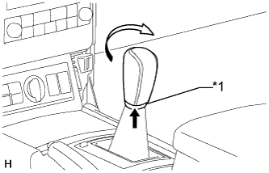
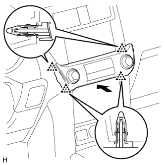

ПЕРЕДНИЙ ВЕЩЕВОЙ ЯЩИК В ОБЛИЦОВКЕ ТУННЕЛЯ ПОЛА (для моделей с автоматической трансмиссией) > УСТАНОВКА |
| 1. УСТАНОВИТЕ ЗАДНИЙ ВЕЩЕВОЙ ЯЩИК В ОБЛИЦОВКЕ ТУННЕЛЯ ПОЛА В СБОРЕ |
Подсоедините все разъемы.
Установите задний ящик в облицовке туннеля пола и закрепите его 2 винтами, фиксатором и 5 болтами.
| 2. УСТАНОВИТЕ ЗАДНЮЮ КОНЦЕВУЮ ПАНЕЛЬ КОНСОЛИ В СБОРЕ |
Подсоедините все разъемы.
Установите заднюю концевую панель консоли и закрепите ее 4 фиксаторами и 4 захватами.
| 3. УСТАНОВИТЕ ВОЗДУХОВОД ВЕЩЕВОГО ЯЩИКА № 1 В ОБЛИЦОВКЕ ТУННЕЛЯ ПОЛА (для моделей с одиночным кондиционером) |
Установите воздуховод № 1 вещевого ящика в облицовке туннеля пола и закрепите его фиксатором.
| 4. УСТАНОВИТЕ ВОЗДУХОВОД № 1 СОЕДИНЕНИЯ ОТОПИТЕЛЯ И ВОЗДУХОВОДА С ДЕФЛЕКТОРОМ В СБОРЕ (для моделей с холодильной камерой) |
Введите в зацепление 4 захвата, чтобы установить воздуховод № 1 соединения отопителя и воздуховода с дефлектором.
Установите 2 зажима.
| 5. УСТАНОВИТЕ ОБЛИЦОВКУ ПАНЕЛИ ПОЛА В СБОРЕ |
Подсоедините все разъемы.
Введите в зацепление 8 фиксаторов и 2 захвата и установите облицовку панели пола.
| 6. УСТАНОВИТЕ РУКОЯТКУ РЫЧАГА ПЕРЕКЛЮЧЕНИЯ ПЕРЕДАЧ В СБОРЕ |
|  |
Установите рукоятку рычага переключения передач и поверните ее в направлении, указанном стрелкой.
Установите чехол лючка рычага переключения передач на рукоятку рычага переключения передач.
| *1 | Чехол лючка рычага переключения передач |
| 7. УСТАНОВИТЕ ПЕРЕДНЮЮ ВСТАВКУ ВЕЩЕВОГО ЯЩИКА В ОБЛИЦОВКЕ ТУННЕЛЯ ПОЛА № 2 |
Введите в зацепление 2 фиксатора и направляющую, чтобы установить переднюю вставку вещевого ящика в облицовке туннеля пола № 2.
| 8. УСТАНОВИТЕ НИЖНЮЮ КРЫШКУ ПАНЕЛИ ПРИБОРОВ № 2 В СБОРЕ |
Введите в зацепление 3 фиксатора и 2 направляющих, чтобы установить нижнюю крышку панели приборов № 2.
Вверните винт.

| *A | Для моделей с левосторонним рулевым управлением | *B | Для моделей с правосторонним рулевым управлением |
| 9. УСТАНОВИТЕ ПЕРЕДНЮЮ ВСТАВКУ ВЕЩЕВОГО ЯЩИКА В ОБЛИЦОВКЕ ТУННЕЛЯ ПОЛА № 1 |
Введите в зацепление 2 фиксатора и направляющую, чтобы установить переднюю вставку вещевого ящика в облицовке туннеля пола № 1.
| 10. УСТАНОВИТЕ НИЖНЮЮ КРЫШКУ ПАНЕЛИ ПРИБОРОВ № 1 В СБОРЕ |
Для моделей с левосторонним рулевым управлением:
Введите в зацепление 2 фиксатора и 2 направляющих, чтобы установить нижнюю крышку панели приборов № 1.
Заверните винт.
Для моделей с правосторонним рулевым управлением:
Введите в зацепление 3 фиксатора и 2 направляющих, чтобы установить нижнюю крышку панели приборов № 1.
Заверните винт.
| 11. УСТАНОВИТЕ ПЕРЕДНЮЮ НАКЛАДКУ ВЕРХНЕЙ ОБЛИЦОВКИ ПАНЕЛИ ПОЛА |
Введите в зацепление 5 фиксаторов, чтобы установить переднюю накладку верхней облицовки панели пола.
| 12. УСТАНОВИТЕ ЛЕВУЮ ОТДЕЛОЧНУЮ НАКЛАДКУ ПАНЕЛИ ПРИБОРОВ |
Введите в зацепление 4 фиксатора, чтобы установить крайнюю отделочную накладку панели приборов.
| 13. УСТАНОВИТЕ ПРАВУЮ ОТДЕЛОЧНУЮ НАКЛАДКУ ПАНЕЛИ ПРИБОРОВ |
Подсоедините разъем.
Введите в зацепление 4 фиксатора, чтобы установить крайнюю отделочную накладку панели приборов.
| 14. УСТАНОВИТЕ ПОДУШКУ ОТДЕЛОЧНОЙ НАКЛАДКИ ПАНЕЛИ ПРИБОРОВ № 2 |
Введите в зацепление 5 фиксаторов, чтобы установить подушку отделочной накладки панели приборов № 2.
| 15. УСТАНОВИТЕ ПОДУШКУ ОТДЕЛОЧНОЙ НАКЛАДКИ ПАНЕЛИ ПРИБОРОВ № 1 |
| 16. УСТАНОВИТЕ ИНТЕГРИРОВАННУЮ ПАНЕЛЬ УПРАВЛЕНИЯ В СБОРЕ |
|  |
Подсоедините разъем.
Установите интегрированную панель управления в сборе и введите в зацепление 4 фиксатора.